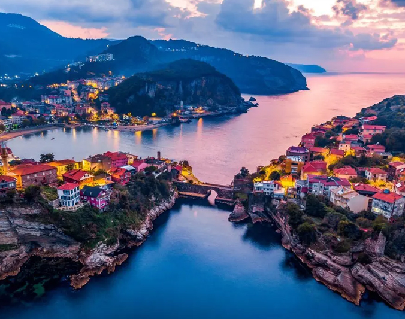

Amasra’da bulunan ve 80 milyon yıllık tarihiyle Güzelcehisar’ı anlamlı kılan, ülkemizin nadir güzelliklerinden biridir Lav Sütunları. Çapları 50 – 100 cm, boyları ise 30 metre üzerinde olan Lav Sütunları, dünyanın ender gelişmiş doğal oluşumlarından biridir. Güzelcehisar Lav Sütunları’nın çok eski bir yanardağın lav akıntıları olduğu biliniyor. Bununla birlikte, dünyada en eski 3 yanardağı kalıntısından biri de burada bulunuyor. Oldukça etkileyici bir görselliğe sahip olan Güzelcehisar Lav Sütunları’nı mutlaka görmenizi tavsiye ediyoruz.
Bartın-Amasra’nın turistik değer taşıyan noktalarından biridir Gürcüoluk Mağarası. Amasra’ya yaklaşık olarak 10 kilometre uzaklıktaki mağaranın uzunluğu 169 metredir. Yıl içerisinde turistler tarafından ziyaret edilen Gürcüoluk Mağarası tek galeriden oluşmaktadır. İçinde bulunan damlataş sütunları odacıklar oluşturmuştur. Mağarayı gezerken sarkıt, sütun ve dikitler kesinlikle farklı bir dünya yaratacak sizlere. Gürcüoluk Mağarası’na ulaşım oldukça kolaydır. Amasra-Çakraz karayolu üzerindeki Karakaçak ve İnpiri köyünün sapaklarından mağaraya gidebilirsiniz. Amasra’nın gizli güzelliklerini görmek için; Göldere Şelalesi’ne, Direkli Kaya’ya ve birbirinden güzel plajlarına da mutlaka zaman ayırın.
Bartın’da bulunan Ulukaya Şelalesi, Ulus ilçesindedir ve yapacağınız yolculuk oldukça özel olacak. Ulukaya Şelalesi’nin 20 metre yükseklikten akışını yemyeşil doğa içinde gördüğünüzde kesinlikle büyüleneceksiniz. Şelale Ulus Çayı ile birleşmektedir ve panoramik güzelliğine şahit olmak için turistlerin bu bölgede mutlaka uğradığı yerler arasındadır. Yaz aylarında suyunda azalma olur ve buna nazaran kış ayarında su debisi oldukça fazlalaşır. Ulukaya Şelalesi’nin bulunduğu yerde bir tesis yoktur. Bir kanyonun içinden akan şelalenin çevresi keşfedilmeyi bekleyen detaylarla doludur. Eğer Bartın tatili planlıyorsanız kesinlikle Ulukaya Şelalesi’nin eşsiz müziğini dinlemeye gitmelisiniz.